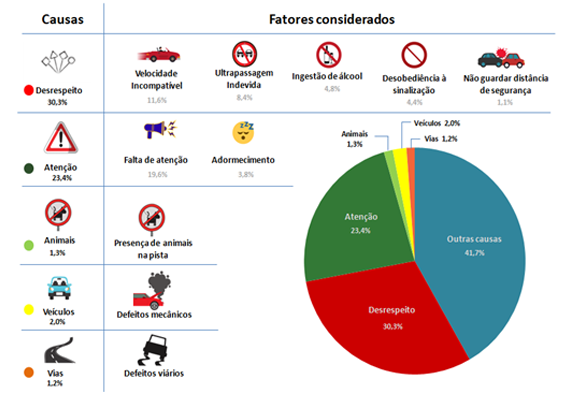
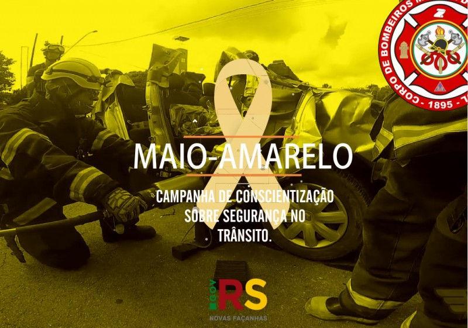

Maio Amarelo: Mês de Prevenção de Acidentes no Trânsito
Logo da campanha
Resumo sobre o Maio Amarelo:
Tem como proposta conscientizar os condutores e pedestres a respeitarem as leis de trânsito.
Seu objetivo primordial é garantir uma redução nos acidentes de trânsito e das mortes que acontecem nesses acidentes.
Em 2024, o lema do Maio Amarelo é “Paz no trânsito começa por você”.
Maio Amarelo- 2024--Ministério dos Transportes
O que é?
É uma iniciativa que une organizações governamentais e privadas para apoiar campanhas de conscientização sobre acidentes de trânsito.
Objetivo:
Reduzir os índices de violência no trânsito em nosso país, garantindo uma redução no número de mortes e feridos por acidentes de trânsito.
Origem:
O mês foi escolhido porque a Organização das Nações Unidas declarou a Década de Ação pela Segurança no Trânsito em 11 de maio de 2011. Portanto, maio se tornou um marco para ações em todo o mundo.
A escolha da cor amarela:
Deve-se ao fato de que os sinais amarelos são indicativos de precaução e atenção no trânsito, indicando a iminência de incidentes. Portanto, o Maio Amarelo representa a importância de prestar continuamente atenção aos motoristas, pedestres e ciclistas para evitar acidentes.

Estudo aponta que mais de 50% dos acidentes de trânsito são causados por falhas humanas

Campanha de Conscientização sobre Segurança no Trânsito - Corpo de Bombeiros Militar do RS
Principais fatos:
90% das mortes no trânsito ocorrem em países de baixa e média renda.
Os acidentes nas vias custam aos países cerca de 3% de seus produtos internos brutos.
Quase metade (49%) das pessoas que morrem nas vias em todo o mundo são pedestres, ciclistas e motociclistas.
Homens correm maior risco de morrer por acidentes de trânsito do que mulheres.
As lesões ocorridas no trânsito são a principal causa de morte entre crianças e jovens de 5 a 29 anos.